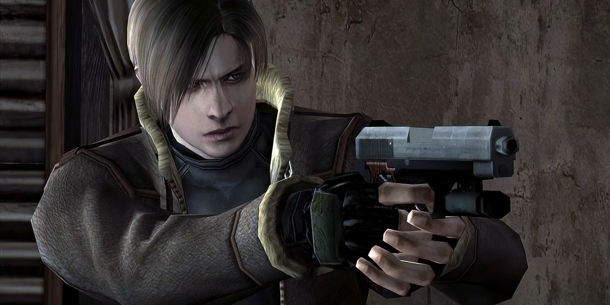
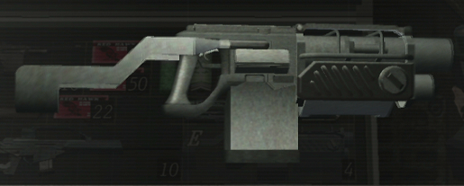

Lion: seorang polisi yang pernah selamat dari Raccoon City pada tahun 1998 yg di namakan kiamat zombi. Setelah 6 tahun kemudian.......

Lion S. Kennedy: Memili tugas dari Persiden Amerika untuk menyelamatkan si Ashley Graham yang pulang dari kuliah. Karakter Lion dia gampamg bergaul/berteman contoh Lion sangan ramah dengan Luis Sera.
Ashley Graham: seorang perempua remaja yang pulang dari kuliah tanpa sengaja dia disergab oleh los uluminados yang tujuan membuat satu desa patuh kepada pecipta plaga tersebut. untuk menguasi Amerika.
Ada Wong adalah tanga kanan si Albert Wesker yang ingin mengambil sempel dari plaga dominan atau plaga kendali
Hangun
hangun atau SG-09 R di remake nya hangun ini sangat direkomdasikan karena hangun SG-09 R bisa headshoot akan tetapi kalau kalian beruntung dapat kritikal hit.
Red9
nilah senjata handgun yang memiliki firepower paling tinggi dari segala jenis handgun di RE4 tapi juga merupakan jenis handgun yang paling berat untuk digunakan. Firepower maksimalnya hingga 6.0, sama seperti shotgun ( meskipun tembakkannya tidak bisa melebar seperti shotgun ). Red9 ini juga senjata yang akan dipakai oleh Luis Sera. Red9 juga mempunyai stock yang berfungsi untuk memermudah pembidikannya Red9 dengan stock.
Blacktail
Blacktail ini yang akan digunakan Ada dalam petualangan Separate Ways. Handgun ini tidak memiliki kekuatan telalu khusus. Meskipun firepowernya diatas handgun tapi blacktail tidak punya kekuatan khusus seperti handgun, capacitynya juga lebih banyak diantara yang lainnya. Tapi firepowernya masih dibawah red9.
Shotgun
Dalam game RE4 kita juga bisa langsung mendapataknya dalam mode easy. Tetapi dalam mode normal dan professional kita bisa menggambilnya di sebuah rumah diantara perumahan desa Puebos. Shotgun ini merupakan shotgun yang paling standar di game RE4, sehingga terasa agak berat untuk menggunakannya.
Striker
nah ini senjata yang saya sukai karena bisa menampung banyak peluru dan serangannya juga besar serta luas areanya.
TPM
TMP adalah senjata yang paling cepat akan tetapi attack nya kurang bagus dikarenakan TMP dikususkan untuk melawan musuh/enemy kroco-kroco.
Rifle semi-auto
untuk Rifle semi-auto,Lion tidak perlu men arin gagng reload nya kerena sudah otomatis akan tetapi saat isi ulang dia akan agak lama kecuali kalian udah up reloadspeed jadi tidak lama saat isi ulang peluru.
Broken Butterfly
"wah ada senjata geratis nih" iya itu lah Broken Butterfly senjata magnum pertama mungkin intinya senjanta ini kuat dan besar serangannya saat up menjadi exclusif(mungkin tulisannya).
Killer7
ini juga bagus dan harga nya agak mahal akan tetapi hasil tidak mengecewakan walawpun Broken Butterfly sangat kuat tapi saat isi ulang peluru kurang cepat menurut saya akan tetapi serangannya sangat kuat, dan attackpower nya cuma 35 dan itu udah max tidak bisa exklusif.
Mine Thrower

nah ini Mine thrower yang paling OP akan tetapi banayak kekurangannya seperti reloadspeed nya agak lama, pelurunya susah dicari lagi walaw begitu itu sudah cukup bagi saya dan ini bisa nge-stune musuh besar seperti Saddler yg sudah mutan.